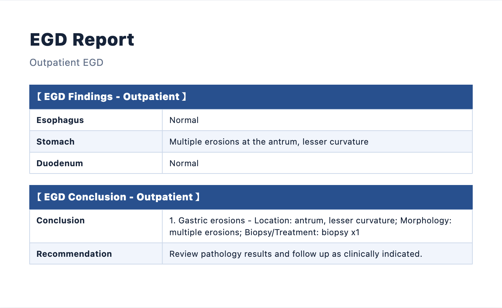
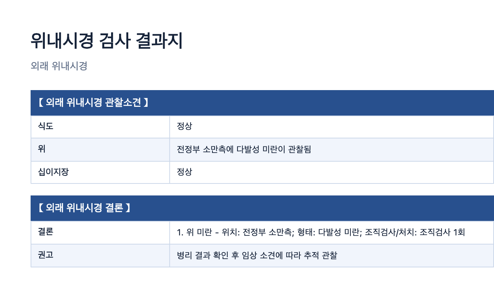

Endoscopy, assisted.
기록보다
검사에
집중하세요.
음성 기록부터 결과지 검토와 인쇄까지,
내시경실의 업무를 한 흐름으로 연결합니다.
최신 테스트 버전을 확인하고 있습니다.

접수자 · 검사자 · 검토자
한 병원, 하나의 흐름위내시경 · 대장내시경
Workflow
말하면 기록되고,
검토하면 완성됩니다.
-
01
환자 등록
접수자가 환자 정보와 사전 문진을 입력해 대기 환자로 등록합니다.
-
02
검사와 음성 기록
검사자는 풋 스위치나 버튼으로 필요한 순간을 녹음합니다.
-
03
결과지 검토
AI가 정리한 초안을 의사가 확인하고 확정한 뒤 인쇄합니다.
Review-ready
병원에서 쓰는 형식에
가깝게 정리합니다.
위·대장 내시경, 공단·외래 양식을 구분하고 한글과 영문 결과지를 제공합니다. 결과는 반드시 의료진이 검토하고 확정합니다.

Installation
설치 파일 하나로
바로 시작합니다.
01
설치 운영체제에 맞는 파일을 내려받아 실행합니다.
02
구성 첫 컴퓨터는 병원 시스템을 만들고, 나머지는 연결 코드로 참여합니다.
03
안내 현재 배포본은 테스트용입니다. 실제 진료 적용 전 병원 내부 검증이 필요합니다.
Local-first
병원 기록은 병원 안에.
환자 정보와 녹음, 결과지는 병원 메인 컴퓨터에 저장됩니다.
AI 분석이 필요한 내용만 Gemini로 직접 전송됩니다.
Endoumi